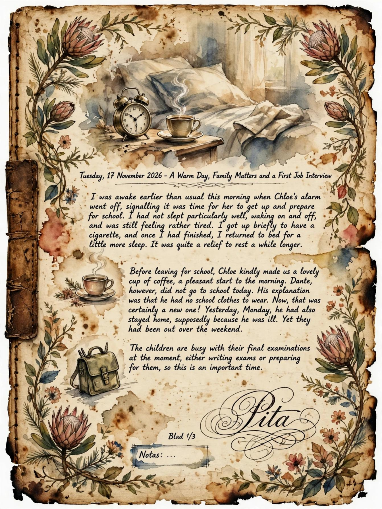
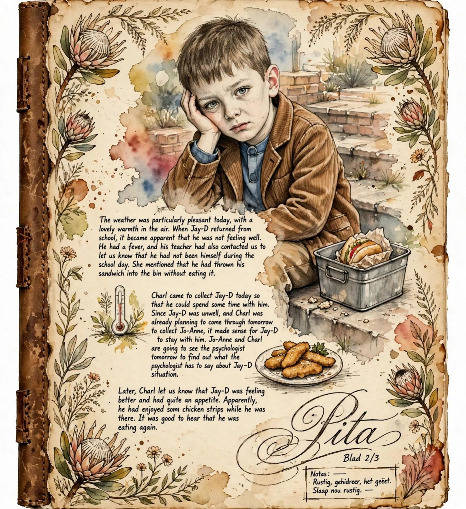
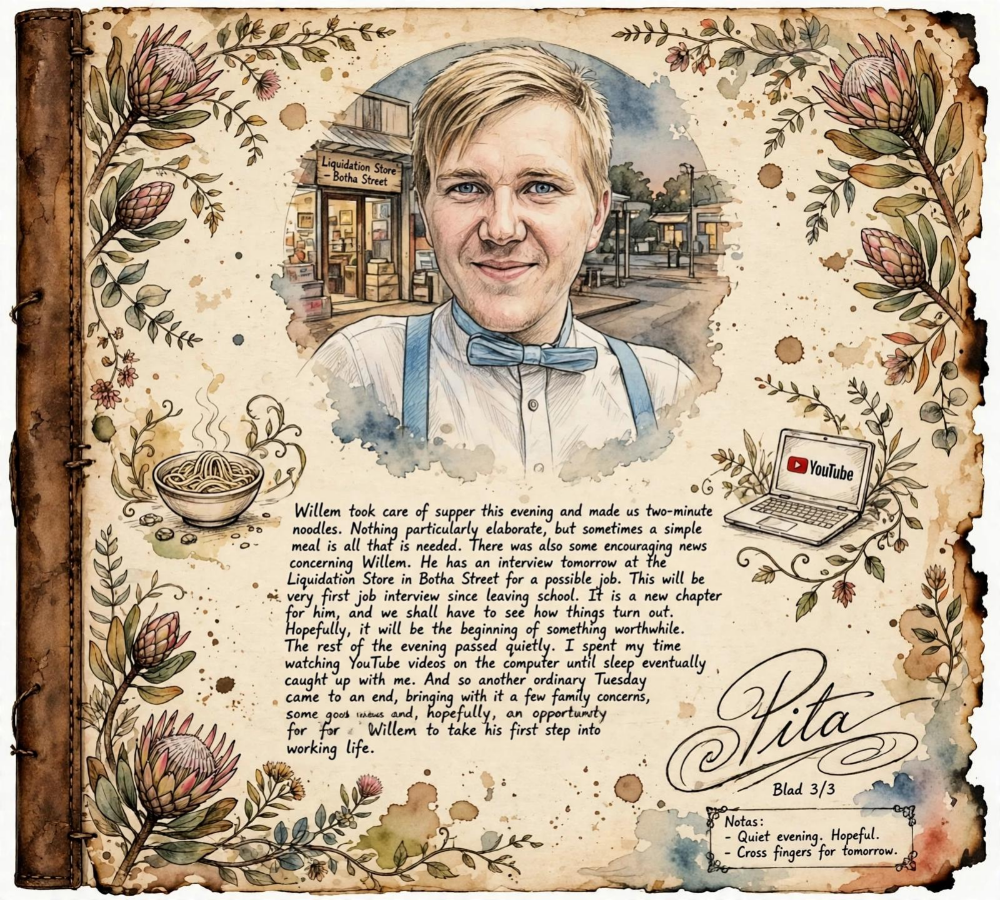

The Wanderer's Illustrated Diary · Entry 001
A Warm Day, Family Matters and a First Job Interview
Tuesday, 17 November 2026 · Original three-page illustrated entry
This entry is presented in its original illustrated form. The three pages below are reproductions of the supplied diary, and the complete original PDF is available to read or save.



Read the complete original diary
The embedded document below is the original PDF supplied for this entry. Its wording and illustrations have not been edited.